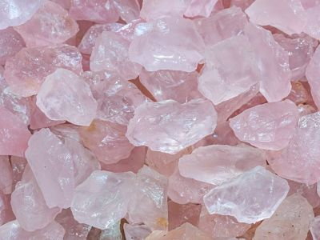

Crystals
It is easy to think that crystals are simply just beautiful stones however they hold a higher power that can be tapped into. For many, many, years people have used crystals for medicinal and ritual purposes. Many believe that these stones have real healing powers. It is common belief that crystals are able to interact with the body's energy fields.
Crystal's physical and mental benefits can be used by Simply holding or positioning crystals on your body which can then generate energy depending on the stone. Crystals can have the power to heal many things within our mind and bodies. Being able to know what crystals mean and how to use them can open up an empowering practice for you. Below are a couple of crystals and their abilities.
Crystal Information